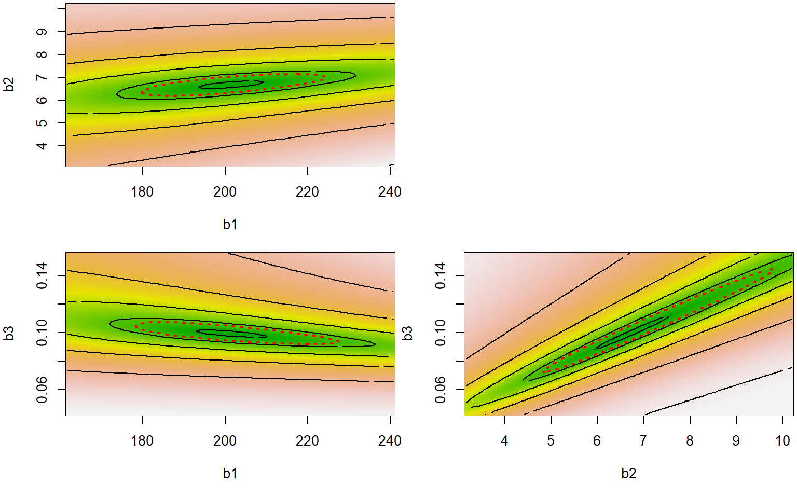
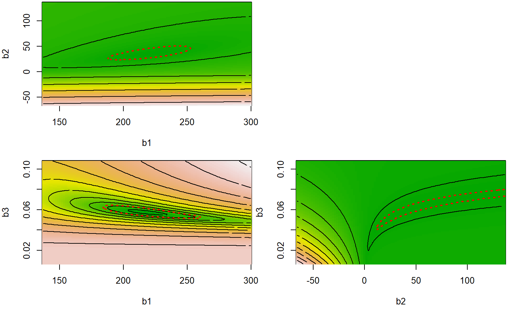
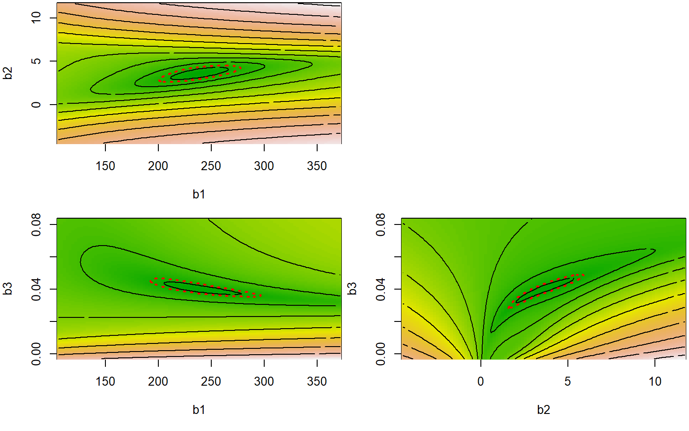
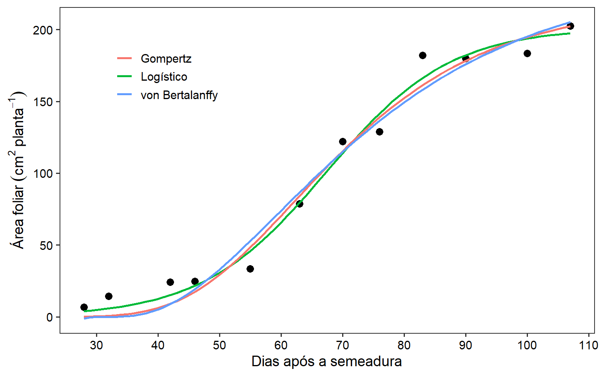
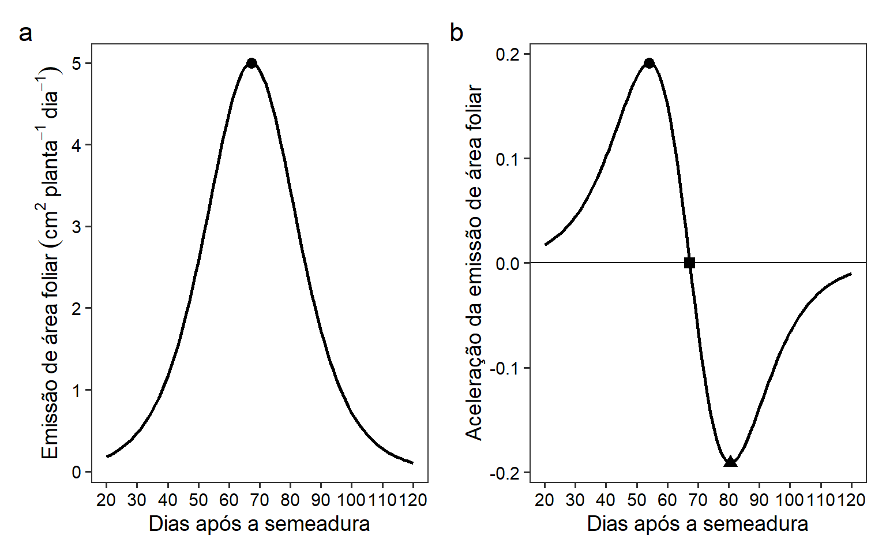

Seleção de modelos de crescimento para descrição da área foliar do linho
1 Pacotes
To reproduce the examples of this material, the R packages the following packages are needed.
library(rio)
library(tidyverse)
library(car)
library(nlstools)
library(lmtest)
library(MASS)
library(nlstools)
my_theme <-
theme_bw(base_size = 14) +
theme(
panel.grid = element_blank(), #remove minor gridlines
axis.text = element_text(colour = "black"),
axis.title = element_text(color = "black")
)2 Raw data
df_nlm <-
import("data/df_models.xlsx") |>
group_by(das) |>
summarise(af_planta = mean(af_planta))3 Logistic
3.1 Fitted
logi <- af_planta ~ b1/(1 + exp(b2 - b3 * das))
start_logi <- c(b1 = 120,
b2 = 3,
b3 = 0.05)
mod_logi <-
nls(logi,
data = df_nlm,
start = start_logi)
summary(mod_logi)
##
## Formula: af_planta ~ b1/(1 + exp(b2 - b3 * das))
##
## Parameters:
## Estimate Std. Error t value Pr(>|t|)
## b1 201.28973 8.70921 23.112 2.53e-09 ***
## b2 6.68127 0.77859 8.581 1.26e-05 ***
## b3 0.09927 0.01253 7.925 2.39e-05 ***
## ---
## Signif. codes: 0 '***' 0.001 '**' 0.01 '*' 0.05 '.' 0.1 ' ' 1
##
## Residual standard error: 10.24 on 9 degrees of freedom
##
## Number of iterations to convergence: 8
## Achieved convergence tolerance: 2.436e-063.2 Model assumptions
shap_logi <- shapiro.test(residuals(mod_logi))
# obtaining the gradient matrix
grad_logi <- attr(mod_logi$m$fitted(),"gradient")
# gradient matrix after removing intercept
m0_logi <- lm(af_planta ~ -1 + grad_logi, data = df_nlm)
# Durbin-Watson test for independence of residuals
(DW_logi <- durbinWatsonTest(m0_logi))
## lag Autocorrelation D-W Statistic p-value
## 1 -0.2929615 2.550195 0.782
## Alternative hypothesis: rho != 0
# Breusch-Pagan' test for heteroscedasticity of residuals
(BP_logi <- bptest(m0_logi))
##
## studentized Breusch-Pagan test
##
## data: m0_logi
## BP = 2.27, df = 2, p-value = 0.32143.3 Nonlinearity estimates
mcurv_logi <-
deriv3( ~ b1/(1 + exp(b2 - b3 * das)),
c("b1", "b2","b3"),
function(b1, b2, b3, das) NULL)
logi_nl <-
nls(af_planta ~ mcurv_logi(b1, b2, b3, das),
data = df_nlm,
start = start_logi)
(nl_logi <- rms.curv(logi_nl))
## Parameter effects: c^theta x sqrt(F) = 0.7274
## Intrinsic: c^iota x sqrt(F) = 0.2051
d <- nlsContourRSS(mod_logi)
## 0%33%66%100%
## RSS contour surface array returned
par(mfrow=c(1,3))
plot(d, nlev = 5, nrow = 2)
3.4 Confidence intervals
conf_logi <- nlsBoot(mod_logi)
conf_logi$bootCI
## Median 2.5% 97.5%
## b1 202.37565637 187.87548907 217.5046640
## b2 6.64387581 5.48950033 8.3440740
## b3 0.09893161 0.07992976 0.12519614 Gompertz
4.1 Fitted
gomp <- af_planta ~ b1 * exp(-b2*exp(-b3*das))
start_gomp <- c(b1 = 120,
b2 = 40,
b3 = 0.05)
mod_gomp <-
nls(gomp,
data = df_nlm,
start = start_gomp)
summary(mod_gomp)
##
## Formula: af_planta ~ b1 * exp(-b2 * exp(-b3 * das))
##
## Parameters:
## Estimate Std. Error t value Pr(>|t|)
## b1 218.28880 17.97565 12.144 6.96e-07 ***
## b2 35.35298 22.33105 1.583 0.147851
## b3 0.05736 0.01119 5.124 0.000624 ***
## ---
## Signif. codes: 0 '***' 0.001 '**' 0.01 '*' 0.05 '.' 0.1 ' ' 1
##
## Residual standard error: 12.79 on 9 degrees of freedom
##
## Number of iterations to convergence: 19
## Achieved convergence tolerance: 4.268e-064.2 Model assumptions
(shap_gomp <- shapiro.test(residuals(mod_gomp)))
##
## Shapiro-Wilk normality test
##
## data: residuals(mod_gomp)
## W = 0.96327, p-value = 0.8292
# obtaining the gradient matrix
grad_gomp <- attr(mod_gomp$m$fitted(),"gradient")
# gradient matrix after removing intercept
m0_gomp <- lm(af_planta ~ -1 + grad_gomp, data = df_nlm)
# Durbin-Watson test for independence of residuals
(DW_gom <- durbinWatsonTest(m0_logi))
## lag Autocorrelation D-W Statistic p-value
## 1 -0.2929615 2.550195 0.748
## Alternative hypothesis: rho != 0
# Breusch-Pagan' test for heteroscedasticity of residuals
(BP_gom <- bptest(m0_logi))
##
## studentized Breusch-Pagan test
##
## data: m0_logi
## BP = 2.27, df = 2, p-value = 0.32144.3 Nonlinearity estimates
mcurv_gomp <-
deriv3( ~ b1 * exp(-b2*exp(-b3*das)),
c("b1", "b2","b3"),
function(b1, b2, b3, das) NULL)
gomp_nl <-
nls(af_planta ~ mcurv_gomp(b1, b2, b3, das),
data = df_nlm,
start = start_gomp)
(nl_gom <- rms.curv(gomp_nl))
## Parameter effects: c^theta x sqrt(F) = 7.4676
## Intrinsic: c^iota x sqrt(F) = 0.3144
d <- nlsContourRSS(gomp_nl)
## 0%33%66%100%
## RSS contour surface array returned
plot(d, nlev = 10)
4.4 Confidence intervals
conf_gom <- nlsBoot(mod_gomp)
conf_gom$bootCI
## Median 2.5% 97.5%
## b1 218.35284831 193.9590997 258.58783574
## b2 35.11560081 14.8623025 129.01348812
## b3 0.05722159 0.0410573 0.079417325 Von bertallanfy
5.1 Fitted
vbl <- af_planta ~ b1 *(1-b2*exp(-b3*das))^3
start_vbl <- c(b1 = 50,
b2 = 100,
b3 = 0.01)
mod_vbl <-
nls(vbl,
data = df_nlm,
start = start_vbl)
summary(mod_vbl)
##
## Formula: af_planta ~ b1 * (1 - b2 * exp(-b3 * das))^3
##
## Parameters:
## Estimate Std. Error t value Pr(>|t|)
## b1 2.385e+02 2.939e+01 8.115 1.97e-05 ***
## b2 3.612e+00 1.784e+00 2.024 0.07359 .
## b3 4.023e-02 9.556e-03 4.210 0.00227 **
## ---
## Signif. codes: 0 '***' 0.001 '**' 0.01 '*' 0.05 '.' 0.1 ' ' 1
##
## Residual standard error: 14.23 on 9 degrees of freedom
##
## Number of iterations to convergence: 32
## Achieved convergence tolerance: 7.152e-065.2 Model assumptions
(shap_vbl <- shapiro.test(residuals(mod_vbl)))
##
## Shapiro-Wilk normality test
##
## data: residuals(mod_vbl)
## W = 0.97884, p-value = 0.9786
# obtaining the gradient matrix
grad_vbl <- attr(mod_vbl$m$fitted(),"gradient")
# gradient matrix after removing intercept
m0_vbl <- lm(af_planta ~ -1 + grad_vbl, data = df_nlm)
# Durbin-Watson test for independence of residuals
(DW_vbl <- durbinWatsonTest(m0_vbl))
## lag Autocorrelation D-W Statistic p-value
## 1 0.1380362 1.686855 0.19
## Alternative hypothesis: rho != 0
# Breusch-Pagan' test for heteroscedasticity of residuals
(BP_vbl <- bptest(m0_vbl))
##
## studentized Breusch-Pagan test
##
## data: m0_vbl
## BP = 0.57322, df = 2, p-value = 0.75085.3 Nonlinearity estimates
mcurv_vbl <-
deriv3( ~ b1 *(1-b2*exp(-b3*das))^3,
c("b1", "b2","b3"),
function(b1, b2, b3, das) NULL)
vbl_nl <-
nls(af_planta ~ mcurv_vbl(b1, b2, b3, das),
data = df_nlm,
start = start_vbl)
(nl_vbl <- rms.curv(vbl_nl))
## Parameter effects: c^theta x sqrt(F) = 5.1689
## Intrinsic: c^iota x sqrt(F) = 2.0234
d <- nlsContourRSS(vbl_nl)
## 0%33%66%100%
## RSS contour surface array returned
plot(d, nlev = 10)
5.4 Confidence intervals
conf_vbl <- nlsBoot(mod_vbl)
conf_vbl$bootCI
## Median 2.5% 97.5%
## b1 240.7793618 206.06940546 326.52024827
## b2 3.5989546 1.66672847 5.99724280
## b3 0.0402038 0.02431254 0.051137996 Fitted model
ggplot(df_nlm, aes(das, af_planta)) +
geom_point(size = 3) +
geom_smooth(method = "nls",
method.args = list(formula = y ~ b1/(1 + exp(b2 - b3 * x)),
start = start_logi),
aes(color = "Logístico"),
se = FALSE) +
geom_smooth(method = "nls",
method.args = list(formula = y ~ b1 * exp(-b2 * exp(-b3 * x)),
start = start_gomp),
aes(color = "Gompertz"),
se = FALSE) +
geom_smooth(method = "nls",
method.args = list(formula = y ~ b1 *(1-b2*exp(-b3*x))^3,
start = start_vbl),
aes(color = "von Bertalanffy"),
se = FALSE) +
# scale_y_continuous(breaks = seq(0, 150, by = 25)) +
labs(x = "Dias após a semeadura",
y = expression(Área~foliar~(cm^2~planta^{-1}))) +
scale_x_continuous(breaks = seq(20, 120, by = 10)) +
my_theme +
theme(legend.position = c(.2,.8),
legend.box.background = element_blank(),
legend.background = element_blank(),
legend.key = element_blank(),
legend.title = element_blank())
7 Tables
observed <- df_nlm$af_planta
gof_logi <- hydroGOF::gof(observed, fitted(mod_logi), digits = 5) |> t()
gof_gom <- hydroGOF::gof(observed, fitted(mod_gomp), digits = 5) |> t()
gof_vbl <- hydroGOF::gof(observed, fitted(mod_vbl), digits = 5) |> t()
gofs <- rbind(gof_logi, gof_gom, gof_vbl) |> as.data.frame()
parameters <-
cbind(data.frame(model = c("Logístico", "Gompertz", "von Bertalanffy")),
rbind(coef(mod_logi), coef(mod_gomp), coef(mod_vbl)),
shapi = c(shap_logi$p.value, shap_gomp$p.value, shap_vbl$p.value),
BP = c(BP_logi$p.value, BP_gom$p.value, BP_vbl$p.value),
DW = c(DW_logi$p, DW_gom$p, DW_vbl$p),
nlpar = c(nl_logi$pe, nl_gom$pe, nl_vbl$pe),
nlint = c(nl_logi$ic, nl_gom$ic, nl_vbl$ic),
AIC = AIC(mod_logi, mod_gomp, mod_vbl)$AIC,
R2 = gofs$R2,
RMSE = gofs$RMSE)
export(parameters, "data/parameters_models.xlsx")7.1 First order derivate
# primeira derivada
D(expression(b1/(1 + exp(b2 - b3 * das))), "das")
## b1 * (exp(b2 - b3 * das) * b3)/(1 + exp(b2 - b3 * das))^2
dy <- function(x,b1,b2,b3){
b1 * (exp(b2 - b3 * x) * b3)/(1 + exp(b2 - b3 * x))^2
}
parameters <-
parameters |>
mutate(xpi = b2 / b3,
ypi = dy(xpi, b1, b2, b3)) |>
as.data.frame()
plot_pi <-
ggplot() +
stat_function(fun = dy,
size = 1,
xlim = c(20, 120),
args = c(b1 = parameters[[1, 2]],
b2 = parameters[[1, 3]],
b3 = parameters[[1, 4]])) +
geom_point(aes(67.30368, 4.995532),
size = 3,
show.legend = FALSE) +
scale_x_continuous(breaks = seq(20, 120, by = 10)) +
labs(x = "Dias após a semeadura",
y = expression(Emissão~de~área~foliar~(cm^2~planta^{-1}~dia^{-1}))) +
my_theme
# segunda derivada
D(expression(b1 * (exp(b2 - b3 * x) * b3)/(1 + exp(b2 - b3 * x))^2), "x")
## -(b1 * (exp(b2 - b3 * x) * b3 * b3)/(1 + exp(b2 - b3 * x))^2 -
## b1 * (exp(b2 - b3 * x) * b3) * (2 * (exp(b2 - b3 * x) * b3 *
## (1 + exp(b2 - b3 * x))))/((1 + exp(b2 - b3 * x))^2)^2)
d2y <- function(x,b1,b2,b3){
-(b1 * (exp(b2 - b3 * x) * b3 * b3)/(1 + exp(b2 - b3 * x))^2 -
b1 * (exp(b2 - b3 * x) * b3) * (2 * (exp(b2 - b3 * x) * b3 *
(1 + exp(b2 - b3 * x))))/((1 + exp(b2 - b3 * x))^2)^2)
}
parameters <-
parameters |>
mutate(xmap = (b2 - 1.3170)/b3,
xmdp = (b2 + 1.3170)/b3,
ymap = d2y(xmap, b1, b2, b3),
ymdp = d2y(xmdp, b1, b2, b3),
)
# plota somente o logístico
df_acel <-
ggplot() +
geom_hline(yintercept = 0) +
stat_function(fun = d2y,
size = 1,
xlim = c(20, 120),
args = c(b1 = parameters[[1, 2]],
b2 = parameters[[1, 3]],
b3 = parameters[[1, 4]])) +
geom_point(aes(xmap, ymap),
data = parameters[1, ],
size = 3,
shape = 19,
show.legend = FALSE) +
geom_point(aes(xmdp, ymdp),
data = parameters[1, ],
size = 3,
shape = 17,
show.legend = FALSE) +
geom_point(aes(xpi, 0),
data = parameters[1, ],
size = 3,
shape = 15,
show.legend = FALSE) +
scale_x_continuous(breaks = seq(20, 120, by = 10)) +
labs(x = "Dias após a semeadura",
y = "Aceleração da emissão de área foliar") +
my_theme
metan::arrange_ggplot(plot_pi, df_acel,
tag_levels = "a")
8 Section info
sessionInfo()
## R version 4.2.0 (2022-04-22 ucrt)
## Platform: x86_64-w64-mingw32/x64 (64-bit)
## Running under: Windows 10 x64 (build 22621)
##
## Matrix products: default
##
## locale:
## [1] LC_COLLATE=Portuguese_Brazil.utf8 LC_CTYPE=Portuguese_Brazil.utf8
## [3] LC_MONETARY=Portuguese_Brazil.utf8 LC_NUMERIC=C
## [5] LC_TIME=Portuguese_Brazil.utf8
##
## attached base packages:
## [1] stats graphics grDevices utils datasets methods base
##
## other attached packages:
## [1] MASS_7.3-58.1 lmtest_0.9-40 zoo_1.8-11 nlstools_2.0-0
## [5] car_3.1-1 carData_3.0-5 forcats_0.5.2 stringr_1.4.1
## [9] dplyr_1.0.10 purrr_0.3.5 readr_2.1.3 tidyr_1.2.1
## [13] tibble_3.1.8 ggplot2_3.4.0 tidyverse_1.3.2 rio_0.5.29
## [17] leaflet_2.1.1
##
## loaded via a namespace (and not attached):
## [1] minqa_1.2.5 googledrive_2.0.0 colorspace_2.0-3
## [4] ellipsis_0.3.2 class_7.3-20 fs_1.5.2
## [7] rstudioapi_0.14 proxy_0.4-27 farver_2.1.1
## [10] ggrepel_0.9.2 fansi_1.0.3 lubridate_1.9.0
## [13] mathjaxr_1.6-0 xml2_1.3.3 splines_4.2.0
## [16] cachem_1.0.6 knitr_1.40 polyclip_1.10-4
## [19] jsonlite_1.8.3 nloptr_2.0.3 broom_1.0.1
## [22] dbplyr_2.2.1 ggforce_0.4.1 compiler_4.2.0
## [25] httr_1.4.4 backports_1.4.1 assertthat_0.2.1
## [28] Matrix_1.5-1 fastmap_1.1.0 gargle_1.2.1
## [31] cli_3.3.0 tweenr_2.0.2 htmltools_0.5.2
## [34] tools_4.2.0 lmerTest_3.1-3 gtable_0.3.1
## [37] glue_1.6.2 Rcpp_1.0.9 cellranger_1.1.0
## [40] jquerylib_0.1.4 vctrs_0.5.0 nlme_3.1-157
## [43] crosstalk_1.2.0 xfun_0.31 lme4_1.1-31
## [46] openxlsx_4.2.5.1 rvest_1.0.3 timechange_0.1.1
## [49] lifecycle_1.0.3 googlesheets4_1.0.1 scales_1.2.1
## [52] gstat_2.1-0 hms_1.1.2 RColorBrewer_1.1-3
## [55] yaml_2.3.5 curl_4.3.3 sass_0.4.2
## [58] reshape_0.8.9 stringi_1.7.8 highr_0.9
## [61] maptools_1.1-5 e1071_1.7-12 boot_1.3-28
## [64] zip_2.2.2 intervals_0.15.2 rlang_1.0.6
## [67] pkgconfig_2.0.3 evaluate_0.18 lattice_0.20-45
## [70] hydroGOF_0.4-0 patchwork_1.1.2 htmlwidgets_1.5.4
## [73] labeling_0.4.2 tidyselect_1.2.0 GGally_2.1.2
## [76] hydroTSM_0.6-0 plyr_1.8.7 magrittr_2.0.3
## [79] bookdown_0.29 R6_2.5.1 generics_0.1.3
## [82] automap_1.0-16 DBI_1.1.3 pillar_1.8.1
## [85] haven_2.5.1 foreign_0.8-82 withr_2.5.0
## [88] mgcv_1.8-40 xts_0.12.2 abind_1.4-5
## [91] sp_1.5-1 spacetime_1.2-8 modelr_0.1.9
## [94] crayon_1.5.2 utf8_1.2.2 tzdb_0.3.0
## [97] rmarkdown_2.17 grid_4.2.0 readxl_1.4.1
## [100] data.table_1.14.4 metan_1.17.0.9000 FNN_1.1.3.1
## [103] rmdformats_1.0.4 reprex_2.0.2 digest_0.6.29
## [106] numDeriv_2016.8-1.1 munsell_0.5.0 bslib_0.4.1